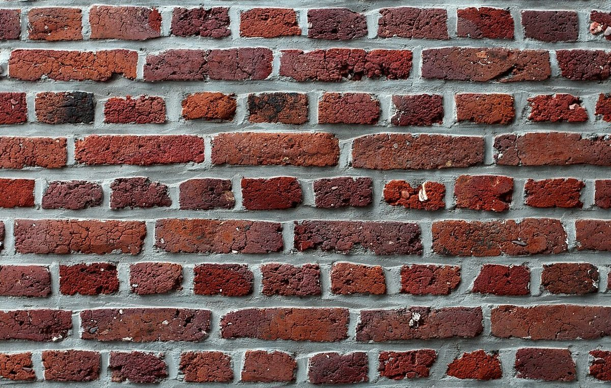
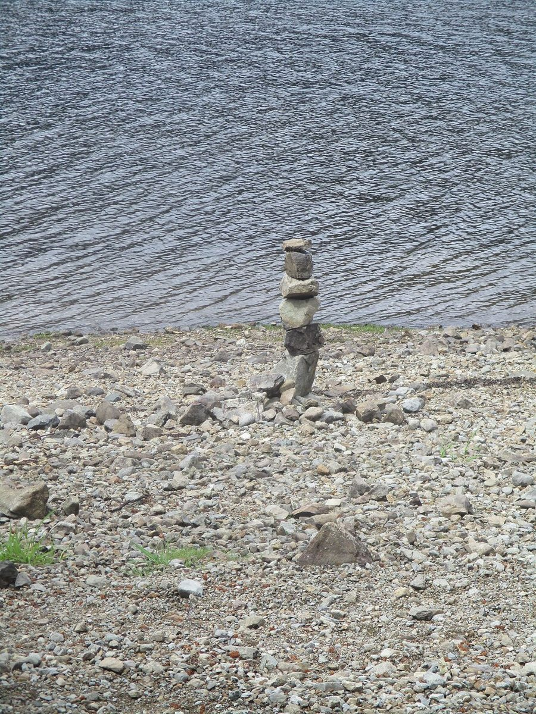

二段目
店のこと
お店について確認できているのは、所在地とInstagramのアカウントだけです。
確認できていることここまで
- 店名は「Bartizan bread factory 那須」、業種はパン屋
- 所在地は栃木県那須塩原市 字戸屋109番7(〒329-3121)
- 電話番号はなし。連絡はInstagramから
- 営業時間・定休日・パンの種類・価格・ご予約・駐車場は準備中
このページの「想像してみる」部分は、制作側が想像して書いたものです。お店の実際の様子・考え・商品とは関係がありません。
想像してみる石を積むように
「Bartizan(バルティザン)」は、城壁の角に張り出した小さな見張り塔(櫓)を指す英語だそうです。ただし、これは屋号から制作側が連想したことで、お店の理念・由来とは無関係です。お店の名前の由来は分かっていません。そこでこのサイトは、石を一段ずつ積むように、パンのイメージ写真を一段ずつ並べる作りにしています。



ご連絡Instagramから
お問い合わせやお知らせの確認は、Instagramをご覧ください。